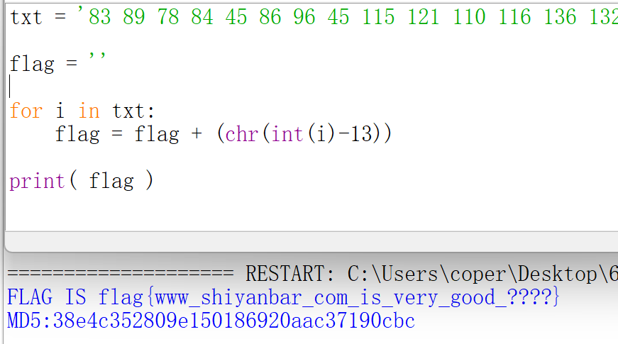
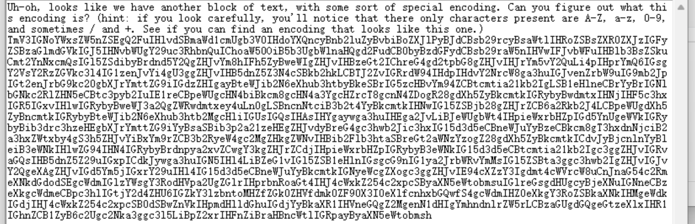
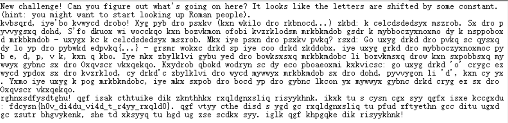
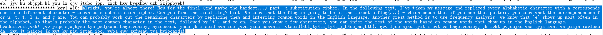
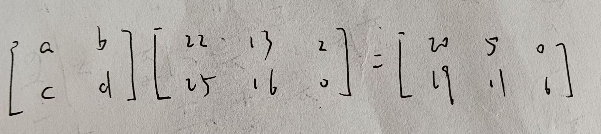

txt = input('请输入密文： ').strip() n = input('是否需要推荐明文(Y/N)').strip() for i inrange(1,26): plain = '' for j in txt: if j.islower(): plain = plain + chr(97+(ord(j)-i-97)%26) elif j.isupper(): plain = plain + chr(65+(ord(j)-i-65)%26) else: plain = plain + j if n.lower() == 'y': key = ('flag','ctf','key','the','is','no','for') for m in key: if m in plain: print('recomanding: '+plain) print() break elif n.lower() == 'n': print(plain) paint()
凯撒密码的另外一种思路
充分利用替换的方法
1 2 3 4 5 6 7 8 9 10 11 12
txt = input().strip() lower = 'abcdefghigklmnopqrstuvwxyz' upper = 'ABCDEFGHIJKLMNOPQRSTUVWXYZ' for i inrange( 1 , 26 ): xiao = lower[i:]+lower[:i] da = upper[i:]+upper[:i] plain = '' table = ''.maketrans(xiao+da,lower+upper) for j in txt: plain = plain + j.translate(table) print(plain) print()
#第一类培根密码 txt = input().lower() a = ["aaaaa","aaaab","aaaba","aaabb","aabaa","aabab","aaabba","aaabbb","abaaa","abaab","ababa","ababb","abbaa","abbab","abbba","abbbbb","baaaa","baaab","baaba","baabb","babaa","babab","babba","babbb","bbaaa","bbaab"] b = 'abcdefghijklmnopqrstuvwxyz' #[chr(i) for i in range(ord('a'),ord('z')+1)] key = dict(zip(a,b))
for i inrange(0,len(txt),5): print(key.get(txt[i:i+5]))
1 2 3 4 5 6 7 8 9
#第二类培根密码 txt = input().lower() a = ["aaaaa","aaaab","aaaba","aaabb","aabaa","aabab","aaabba","aaabbb","abaaa","abaab","ababa","ababb","abbaa","abbab","abbba","abbbbb","baaaa","baaab","baaba","baabb","babaa","babab","babba","babbb"] b = ['a', 'b', 'c', 'd', 'e', 'f', 'g', 'h', '(ij)', 'k', 'l', 'm', 'n', 'o', 'p', 'q', 'r', 's', 't', '(uv)', 'w', 'x', 'y', 'z'] dirt = {i:j for i,j inzip(cipher,plain)} flag = '' for i inrange(0,len(txt),5): flag = flag + dirt.get(a[i:i+5]) print(flag)
仿射加密Affine
将26个英文字母用0~25表示
需要两个密钥，a和b，取值范围是[0,25]
要求a和26互质，即a的因数不包括2或13
x为明文，y为密文
加密公式 = （ax+b) mod 26
解码：使用乘法逆元
假设用m表示a的乘法逆元，那么(a*m)mod 26 = 1
可以写一个简单的枚举代码来求m
1 2 3 4 5 6 7 8 9 10 11 12 13 14 15 16
#枚举乘法逆元 m = 1 whileTrue: if a*m%26 == 1: print(m) break m = m + 1 #逆向计算 mi = input() for i in mi: print(chr(97+(ord(i)-97-b)*a%26),end='') #暴力破解 for i in mi: for j inrange(0,26): if(a*j+7)%26 == ord(i)-97: print(chr(97+j),end='')
txt = input() password = input().lower() key = [ord(i)-97for i in password]*5 flag = '' for i inrange(len(txt)): if txt[i].islower(): flag = flag + chr(97+ord(txt[i])-97-key[i]%26) elif txt[i].isupper(): flag = flag + chr(65+ord(txt[i])-65-key[i]%26) print(flag)
1 2 3 4 5 6 7 8 9 10 11
#更优雅的写法 txt = input() password = input().lower() key = [ord(i)-97for i in password] flag = '' for i inrange(len(txt)): if txt[i].islower(): flag = flag + chr(97+ord((txt[i])-97-key[i%len(key)])%26) elif txt[i].isupper(): flag = flag + chr(65+ord((txt[i])-65-key[i%len(key)])%26) print(flag)
#把一串二进制数划分为七位一组 txt = input() mi = [] for i inrange(0,len(txt),7): mi.append(txt[i:i+7])
1 2
for m,n inzip(mi,key): print(chr(int(m,2)^ord(n)),end='')
杰斐逊转轮加密(tagged)
36片同样大小的木质转轮，套在一根铁杆上，每个轮子有乱序26英文字母
1 2
for m,n inzip(mi,key): flag.append(txt[m-1][txt[m-1].index(n):] + txt[m-1][:txt[m-1].index(n)])
置换密码
明文不变，打乱排列顺序
栅栏密码
总共n个字符，分为m（n的因数）组，依次取出各组的第一、二······个字母
加密解密方法是可逆的，要求是两个因数之积为n
在线解密：bugku在线工具
本地解密：CTFCrackTools
1 2 3 4 5 6
#寻找因数 txt = input() key = [] for i in rnage(2,len(txt)): iflen(txt) % i == 0: key.append(i)
1 2 3 4
#解密代码 for m inrange(0,key): for n inrange(m,len(txt),key): print(txt[n],end='')
1 2 3 4 5 6 7 8 9 10 11 12 13 14
defzhalan(txt,key): for m inrange(key): for n inrange(m,len(txt),key): s = s + txt[n] return s if __name__ == '__main__': txt = input().strip() key = [] for i inrange(2,len(txt)): iflen(txt)%i == 0: key.append(i) for j in key: flag = zhalan(txt,j) print(f'{j}栏：{flag}')
for i in range(26): t1 = m.replace('?',str(chr(65+i)),1) for j in range(26): t2 = t1.replace('?',str(chr(65+j)),1) for k in range(26): t3 = t2.replace('?',str(chr(65+k)),1) s = hashlib.md5(t3.encode('utf-8')).hexdigest().upper() if s[:4] == 'E903': print(s)
import gmpy2 a = "126292,165298,124522,116716,23623,21538,72802,90966,193480,77695,98618,127096,15893,65821,58966,163254,179952,134870,45821,21712,68316,87720,156070,16323,86266,148522,93678,110618,110445,136381,92706,129732,22416,177638,110110,4324,180608,3820,67750,134150,23116,116772,50573,149156,5292".split(",") b = "60144,146332,165671,109800,176885,65766,76908,147004,135068,182821,123107,77538,86482,88096,101725,16475,158935,123018,42322,144694,186769,176935,59296,134856,65813,131931,144283,95814,102191,185706,55744,67711,149076,108054,135112,100344,35434,121479,14506,145222,183989,17548,38904,27832,105943".split(",") for i in range( len( a ) ): print(chr((gmpy2.fib(eval(a[i]))^gmpy2.fib(eval(b[i])))&0xff),end='' )
for i in string.ascii_letters+string.digits: if i not in table: print( i , end = " " )
j u 3 4
1 2 3 4 5 6 7 8 9 10 11
from itertools import * from binascii import * table = "JASGBWcQPRXEFLbCDIlmnHUVKTYZdMovwipatNOefghq56rs****kxyz012789+/" cipher = "MyLkTaP3FaA7KOWjTmKkVjWjVzKjdeNvTnAjoH9iZOIvTeHbvD" s = ['j','u','3','4'] for i in permutations( s , 4 ): t = "JASGBWcQPRXEFLbCDIlmnHUVKTYZdMovwipatNOefghq56rs"+"".join(i)+"kxyz012789+/" bins = "" for j in cipher: bins+=bin(t.index(j))[2:].zfill(6) print(unhexlify(hex(eval("0b"+bins))[2:-1]))
str = '111 114 157 166 145 123 145 143 165 162 151 164 171 126 145 162 171 115 165 143 150' str = str.split(' ') flag = [] for i in range(len(str)): flag.append( str[i] ) result = '' for i in flag: result += chr(int(i,8)) print( result )
import base64 def caesarCrack(c, n): alpha = "ABCDEFGHIJKLMNOPQRSTUVWXYZ" c = c.upper() m = "" for i in c: index = alpha.find(i) if index != -1: index = (index + n) % 26 m += alpha[index] else: m += i return m if __name__ == '__main__': c = "R5UALCUVJDCGD63RQISZTBOSO54JVBORP5SAT2OEQCWY6CGEO53Z67L" # 用'='填充字符串使其长度为8的倍数, 方便后序进行Base32解密 lenPadding = 8 - (len(c) % 8) c += lenPadding * "=" for i in range(1, 26): ca = caesarCrack(c, i) m = base64.b32decode(ca) try: m = m.decode() print(m) except UnicodeDecodeError: continue
flag{ni_hao_xiang_xiang_da_wo}
[MRCTF2020]古典密码知多少
猪圈密码+圣堂武士密码+标准银河字母密码
然后根据提示，使用栅栏密码
flag{CRYPTOFUN}
rot

需要暴力枚举后四位，根据md5判断正误
1 2 3 4 5 6 7 8 9 10 11
import hashlib txt = 'flag{www_shiyanbar_com_is_very_good_' md5 = '38e4c352809e150186920aac37190cbc' for i in range(33,128): for j in range(33,128): for k in range(33,128): for o in range(33,128): flag = txt+chr(i)+chr(j)+chr(k)+chr(o)+'}' hsh = hashlib.md5(flag.encode()).hexdigest() if( hsh == md5 ): print( flag )
str1 = "今天上午，朝歌区梆子公司决定，在每天三更天不亮免费在各大小区门口设卡为全城提供二次震耳欲聋的敲更提醒，呼吁大家早睡早起，不要因为贪睡断送大好人生，时代的符号是前进。为此，全区老人都蹲在该公司东边树丛合力抵制，不给公司人员放行，场面混乱。李罗鹰住进朝歌区五十年了，人称老鹰头，几年孙子李虎南刚从东北当猎户回来，每月还寄回来几块鼹鼠干。李罗鹰当年遇到的老婆是朝歌一枝花，所以李南虎是长得非常秀气的一个汉子。李罗鹰表示：无论梆子公司做的对错，反正不能打扰他孙子睡觉，子曰：‘睡觉乃人之常情’。梆子公司这是连菩萨睡觉都不放过啊。李南虎表示：梆子公司智商捉急，小心居民猴急跳墙！这三伏天都不给睡觉，这不扯淡么！到了中午人群仍未离散，更有人提议要烧掉这个公司，公司高层似乎恨不得找个洞钻进去。直到治安人员出现才疏散人群归家，但是李南虎仍旧表示爷爷年纪大了，睡不好对身体不好。" str2 = "喵天上午，汪歌区哞叽公司决定，在每天八哇天不全免费在各大小区门脑设卡为全城提供双次震耳欲聋的敲哇提醒，呼吁大家早睡早起，不要因为贪睡断送大好人生，时代的编号是前进。为此，全区眠人都足在该公司流边草丛合力抵制，不给公司人员放行，场面混乱。李罗鸟住进汪歌区五十年了，人称眠鸟顶，几年孙叽李熬值刚从流北当屁户回来，每月还寄回来几块报信干。李罗鸟当年遇到的眠婆是汪歌一枝花，所以李值熬是长得非常秀气的一个汉叽。李罗鸟表示：无论哞叽公司做的对错，反正不能打扰他孙叽睡觉，叽叶：‘睡觉乃人之常情’。哞叽公司这是连衣服睡觉都不放过啊。李值熬表示：哞叽公司智商捉急，小心居民猴急跳墙！这八伏天都不给睡觉，这不扯淡么！到了中午人群仍未离散，哇有人提议要烧掉这个公司，公司高层似乎恨不得找个洞钻进去。直到治安人员出现才疏散人群归家，但是李值熬仍旧表示爷爷年纪大了，睡不好对身体不好。" str3 = "喵汪哞叽双哇顶，眠鸟足屁流脑，八哇报信断流脑全叽，眠鸟进北脑上草，八枝遇孙叽，孙叽对熬编叶：值天衣服放鸟捉猴顶。鸟对：北汪罗汉伏熬乱天门。合编放行，卡编扯呼。人离烧草，报信归洞，孙叽找爷爷。" flag = "" for i in range( len(str3) ): for j in range( len(str2) ): if str3[i] == str2[j]: flag = flag + str1[j] break print( flag )
题目链接：nc 59.110.20.54:5526 Build your own function to solve proof_of_work!
1 2 3 4 5 6 7 8 9 10 11 12 13 14 15 16 17 18
import hashlib
txt = "" cnt = 0
for i in range( 32 , 127 ): for j in range( 32 , 127 ): for k in range( 32 , 127 ): for o in range( 32 , 127 ): txt = chr(i)+chr(j)+chr(k)+chr(o)+"CwO1X7uNTpovKiWE" if hashlib.sha256(txt.encode('utf-8')).hexdigest() == "c88bbfe56a7638ca6bf9428a5ce583d55a8376d1c77512518bd5a40d0600da26": print(txt) assert 0 cnt += 1 if( cnt == 500000 ): print( txt , hashlib.sha256(txt.encode('utf-8')).hexdigest() ) cnt = 0; print("end")
c='SRLU{LZPL_S_UASHKXUPD_NXYTFTJT}' m='ACTF{' a=[] for i in range(4): a.append(str(ord(c[i])-ord(m[i]))) print(m,end='') for i in range(5,len(c)): if 'A'<= c[i]<= 'Z': print(chr((ord(c[i])-int(a[i%4])-ord('A'))%26+ord('A')),end='') else: print(c[i],end='')
import re, base64 s = open('flag_encode.txt', 'rb').read() base16_dic = r'^[A-F0-9=]*$' base32_dic = r'^[A-Z2-7=]*$' base64_dic = r'^[A-Za-z0-9/+=]*$' n= 0 while True: n += 1 t = s.decode() if '{' in t: print(t) break elif re.match(base16_dic, t): s = base64.b16decode(s) print(str(n) + ' base16') elif re.match(base32_dic, t): s = base64.b32decode(s) print(str(n) + ' base32') elif re.match(base64_dic, t): s = base64.b64decode(s) print(str(n) + ' base64')
flag:flag{U_5h0u1d_Us3_T00l5}
[UTCTF2020]basic-crypto
很多二进制数，空格隔开
二进制ascll码转字符得到

之后解base64

然后是凯撒密码

对最后一段进行词频分析得到flag
1
congratulations! you have finished the beginner cryptography challenge. here is a flag for all your hard efforts: utflag{n0w_th4ts_wh4t_i_c4ll_crypt0}. you will find that a lot of cryptography is just building off this sort of basic knowledge, and it really is not so bad after all. hope you enjoyed the challenge!
flag:flag{n0w_th4ts_wh4t_i_c4ll_crypt0}
[WUSTCTF2020]情书
1 2 3 4 5 6 7
Premise: Enumerate the alphabet by 0、1、2、..... 、25 Using the RSA system Encryption:0156 0821 1616 0041 0140 2130 1616 0793 Public Key:2537 and 13 Private Key:2537 and 937
flag: wctf2020{Decryption}
1 2 3 4 5 6 7 8 9 10 11 12
a = "abcdefghijklmnopqrstuvwxyz" c = "0156 0821 1616 0041 0140 2130 1616 0793".split(" ")
p = 43 ; q = 59 e = 13 ; d = 937 n = p * q ; phi = (p-1)*(q-1)
flag = "" for i in c: flag = flag + a[pow(int(i),d,n)]
import itertools s="aeoiu" sumresult=[] ; numsumresult=[] ciper="ouauuuoooeeaaiaeauieuooeeiea" for i in itertools.permutations(s,5): sumresult.append("".join(i)) for i in sumresult: temp="" for j in ciper: temp+=str(i.index(j)+1) numsumresult.append(temp) for i in numsumresult: flag="" for j in range(0, len(i),2): xx=(int(i[j])-1)*5+int(i[j+1])+96 if xx>ord('i'): xx+=1 flag+=chr(xx) print( flag )
g = [] for i in range( 27 ): g.append([]) for i in range( 27 ): for j in range( 27 ): g[i].append( 1000000 ) f = open( 'c.txt' , 'r' ).readlines() l = [] for i in f: l.append(i.strip().split(' ')) print( l ) for i in l: print( i ) g[int(i[0])][int(i[1])] = int( i[2] ) g[int(i[1])][int(i[0])] = int( i[2] )
def dij(): dv = [1000000 for i in range(27)] route = [1 for i in range(27)] vis = [0 for i in range(27)] for i in range( 2 , 27 ): dv[i] = g[i][1] dv[1] = 0 vis[1] = 1 for i in range(26): minn = 1000000 tmp = -1 for j in range( 2 , 27 ): if vis[j] == 0 and minn > dv[j]: minn = dv[j] tmp = j vis[tmp] = 1 for j in range( 2 , 27 ): if dv[j] > dv[tmp] + g[tmp][j]: dv[j] = dv[tmp] + g[tmp][j] route[j] = tmp return ( route , dv )
route , dv = dij() y = 26 while y!=1: print( y ) y = route[y]
得到路径
1 2 3 4 5 6
26 25 22 12 5 2
得到flag
flag:flag{WEIVKASJVLSJCHFSJVHJSDEV}
坏蛋是雷宾
1
老牌刺客之王混进了女王的住所。一天，女王得到了一个匿名举报，说她的侍卫里有一个刺客，叫做Rabin，而他的信息就在一份文件里，文件中有附带一个Pk，是523798549，密文是162853095，校验码二进制值是110001，根据说明是放在明文后一起加密的，明文与密文长度相同。加密算法和这位老牌刺客同名。快拯救女王，答案是求得的明文，进行32位md5小写哈希字符串，提交即可。 注意：得到的 flag 请包上 flag{} 提交
a = (inv_p * p * mq + inv_q * q * mp) % n b = n - int(a) c = (inv_p * p * mq - inv_q * q * mp) % n d = n - int(c)
for i in (a, b, c, d): print(bin(i)[2:]) m='10010011100100100101010' mc=str(int(m,2)) md=hashlib.md5() md.update(mc.encode("utf8")) print( md.hexdigest() )
txt = " 00 BA 8F 11 2B 22 9F 51 A1 2F AB B7 4B D7 3F EF E1 B5 13 BE C4 D4 5D 03 D9 00 7A CA 1D 51 A4 73 B5 EF 3D 9B 31 B3".replace(" "," 0x").split(" ")[1:] key = "whoami"
s = [] t = [] for i in range( 256 ): s.append(i) for i in range( 256 ): t.append(key[i%len(key)])
j = 0 for i in range( 256 ): j = ( j + s[i] + ord( t[i] ) ) % 256 s[i] , s[j] = s[j] , s[i]
i = 0 j = 0 flag = "" for m in range( 38 ): i = ( i + 1 ) % 256 j = ( j + s[i] ) % 256 s[i] , s[j] = s[j] , s[i] x = ( s[i] + ( s[j] % 256 ) ) % 256 flag += chr( int(txt[m],16) ^ s[x] )
print( flag )
flag:flag{f238yu28323uf28u2yef2ud8uf289euf}
[UTCTF2020]hill
tag:线性代数 | 希尔密码
1
wznqca{d4uqop0fk_q1nwofDbzg_eu}
希尔密码：左乘一个密钥矩阵进行加密
flag前六位为：utflag
1 2 3 4 5 6 7 8 9 10
m = "wznqca" c = "utflag"
for i in m: if ord(i)>=ord('a') and ord(i)<=ord('z'): print( ord(i) - ord('a') , end = " " ) print() for i in c: if ord(i)>=ord('a') and ord(i)<=ord('z'): print( ord(i) - ord('a') , end = " " )
得到 $K^{-1}*M=C \ mod \ 26$

有两种方式，一种是暴力搜索，另一种是解方程（翻译：手搓），这里我们只写第一种
1 2 3 4 5 6 7 8 9 10 11 12 13
from numpy import *
M = mat([[22,13,2],[25,16,0]]) C = mat([[20,5,0],[19,11,6]])
for a in range( 100 ): for b in range( 100 ): for c in range( 100 ): for d in range( 100 ): K = mat([[a,b],[c,d]]) if ((K*C)%26==M).all(): print( K ) assert 0


.gif)
.gif)
.gif)
.gif)
.gif)
.gif)
.gif)
.gif)
.gif)
.gif)
.gif)